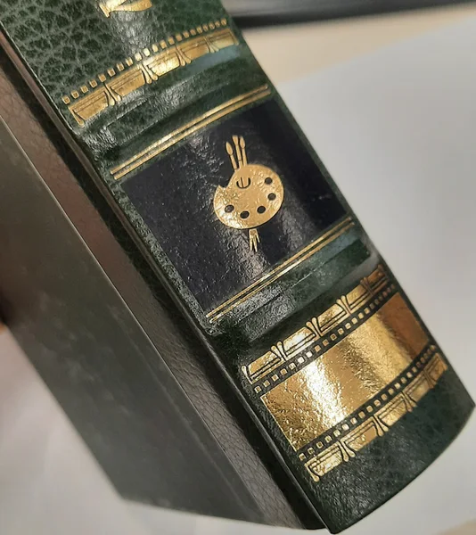
Тиснение — это способ придать печатным материалам особую элегантность и престиж. Эффектные рельефные элементы не только привлекают внимание, но и усиливают тактильные ощущения, делая книги, упаковку или приглашения незабываемыми. Полиграфический комплекс «ПК КЕМ» предлагает широкий выбор видов тиснения: конгревное, фольгированное, блинтовое — для создания уникальных решений, подчеркивающих стиль и статус вашей компании.
Цена тиснения зависит от нескольких факторов
- Тип тиснения – конгревное, блинтовое, фольгированное или комбинированное тиснение. Каждый вариант имеет свои особенности и влияет на стоимость.
- Материал – бумага, картон, кожа, пластик или другие поверхности требуют разного подхода в обработке.
- Тираж – чем больше экземпляров, тем ниже стоимость одного отпечатка.
- Сложность макета – тиснение с мелкими деталями и сложными элементами требует большей точности и может повлиять на цену.
- Формат и площадь тиснения – чем больше площадь нанесения, тем выше расход материалов и стоимость.
- Используемая фольга – классическая металлизированная, голографическая, цветная или с особыми эффектами – каждая из них имеет разную цену.
- Необходимость изготовления клише – индивидуальное клише для тиснения изготавливается отдельно, что также влияет на итоговую стоимость.
Минимальная стоимость тиснения – от 3000 рублей. Точную цену можно рассчитать, исходя из параметров заказа.
Преимущества
Тиснение — это не только способ улучшить внешний вид печатной продукции, но и мощный инструмент для усиления бренда. Вот основные преимущества этого метода
- Уникальность и эксклюзивность Тиснение добавляет эксклюзивности вашему продукту. Это особенный способ выделить ключевые элементы дизайна, такие как логотип, название или другие важные детали, придавая им особую выразительность и запоминаемость.
- Эстетический и тактильный эффект Рельефные элементы, созданные тиснением, можно не только увидеть, но и ощутить на ощупь. Этот тактильный эффект привлекает внимание и вызывает положительные ассоциации с качеством и престижем.
- Повышенная стойкость Тиснение добавляет долговечности печатной продукции. Рельефы и текстуры менее подвержены износу по сравнению с обычной печатью, что особенно важно для материалов, которые часто используются или подвергаются трению.
Виды тиснения
Тиснение может быть выполнено различными способами, каждый из которых имеет свои особенности и преимущества.
- Слепое (блинтовое) Это процесс создания рельефа без использования краски или фольги. Изображение или текст становятся выпуклыми или вдавленными на поверхности материала, создавая эффект, который можно ощутить на ощупь.
- Конгревное Создаётся рельеф на материале с высокой точностью и детализацией. Этот метод позволяет передать даже сложные графические элементы с чёткими линиями и глубиной.
- Фольгированное Этот метод сочетает тиснение с нанесением металлической или цветной фольги, которая приклеивается к материалу под воздействием давления и тепла. Фольга может быть золотой, серебряной, а также в других оттенках.
- С использованием УФ-лакирования Используется специальное УФ-лакирование, которое придает блеск или текстуру определённым участкам, сочетая элементы тиснения и лакировки.
Как выполняется тиснение
Тиснение в типографии выполняется с использованием специального оборудования и технологий, которые позволяют создавать рельефные изображения на различных материалах. Процесс может варьироваться в зависимости от типа тиснения, но общая схема следующая
1. Подготовка макета
На первом этапе создаётся дизайн, в котором чётко обозначены элементы, которые будут подвергнуты тиснению (например, логотип, текст, орнамент). Макет должен учитывать, что эти элементы будут выпуклыми или вдавленными, поэтому важно точно определить места, где необходимо усилить или смягчить эффекты. Макет передаётся в специальный формат, подходящий для тиснения.
2. Создание формы
Для тиснения используется рельефная металлическая форма – клише, на которую наносится изображение в соответствии с макетом, где тиснимые элементы возвышаются над нетиснимыми.
Для конгревного тиснения клише имеет ответную часть – контрматрицу, это позволяет сделать рельеф оттиска более выраженным.
Для фольгированного тиснения создаётся штамп, который будет работать вместе с фольгой. Важно, чтобы форма была изготовлена с высокой точностью, чтобы фольга легла ровно и без излишков.
3. Выбор материала
Тиснение может быть выполнено на различных материалах, таких как бумага, картон, кожа, пластик и другие. Важно, чтобы материал был подходящим для того, чтобы создать нужный рельеф, и мог выдержать давление, которое применяется в процессе.
4. Процесс тиснения
- Тиснение с фольгой: на материал накладывается фольга, после чего металл или другой материал нагревается и под большим давлением помещается в форму. Фольга приклеивается к материалу только в тех местах, где происходит контакт с формой.
- Слепое и конгревное тиснение: формы (выпуклая и вогнутая) приводятся в движение с помощью пресс-машины. Под воздействием высокой температуры и давления материал прогибается или выпукло формируется в нужных местах.
- УФ-лакирование: в этом процессе используется специальный УФ-лак, который наносится на определённые участки материала. Затем под действием ультрафиолетового света лак твердеет и остаётся блестящим или матовым, создавая эффект текстуры.
5. Охлаждение и обработка
Затем материал должен остыть, особенно если использовалась фольга или УФ-лак. Это позволяет сохранить форму и гарантировать качество нанесённого тиснения.
В некоторых случаях после тиснения может потребоваться дополнительная обработка: обрезка, вырубка, лакировка и другие действия для улучшения визуального и тактильного эффекта.
6. Контроль качества
После завершения производится проверка качества: осмотр на наличие дефектов, таких как пропуски, неровности или излишки краски. Особенно важно, чтобы фольга или лак были равномерно нанесены.
Тиснение в Полиграфическом комплексе «ПК КЕМ» — это точный и многокомпонентный процесс, который требует высокой квалификации специалистов и правильного выбора материалов и оборудования.
Как долго занимает процесс тиснения?
Время выполнения зависит от сложности дизайна, типа тиснения и объёма заказа. Обычно процесс занимает от нескольких дней до нескольких недель, включая подготовку форм и проверку качества.
Какой минимальный тираж можно заказать?
Минимальный тираж зависит от типа работы, но обычно минимальный заказ начинается от 100 экземпляров.
Можно ли выполнить тиснение на цветной или текстурной бумаге?
Да, часто такие материалы дают интересный эффект, добавляя дополнительную глубину и богатство изображению.
Какие есть ограничения для тиснения?
Ограничения могут зависеть от материала и сложности дизайна. Например, слишком сложные или мелкие элементы могут быть трудными для воспроизведения на некоторых типах бумаги или при определённых методах тиснения.
Можно ли сочетать тиснение с другими методами печати и оформления?
Да, можно комбинировать с другими методами, такими как офсетная печать, УФ-лакирование, индексная вырубка и цифровая печать. Это позволяет создавать более сложные и эффектные дизайны.
Есть ли ограничения по цветам при фольгированном тиснении?
Фольгирование чаще всего используется для золотого, серебряного или бронзового цветов, но возможно также применение фольги других цветов (красной, синей, зелёной и других). Однако выбор ограничен типом фольги, доступной в типографии.
Можно ли сделать тиснение на тканевых материалах?
Да, можно выполнить на тканевых материалах, таких как кожзам, текстиль, а также на некоторых видах синтетических материалов. Ткань обычно требует особого подхода, чтобы сохранить форму и качество рельефа.
Доставка
Вы можете забрать свой заказ самостоятельно со склада типографии, расположенного в г. Мытищи (15 км от МКАД, мкрн. пос. Пироговский, ул. Фабричная, дом 1) или из нашего офиса по адресу: Москва, Научный проезд, дом 17, Бизнес-центр «9 Акров».
Перед посещением склада в Мытищах Ваш менеджер оформит для Вас пропуск.
Также мы предоставляем услуги по доставке тиража.
Подробную информацию об условиях доставки и сроках изготовления заказа Вы можете узнать у своего личного менеджера типографии «ПК КЕМ».
Материалы и образцы


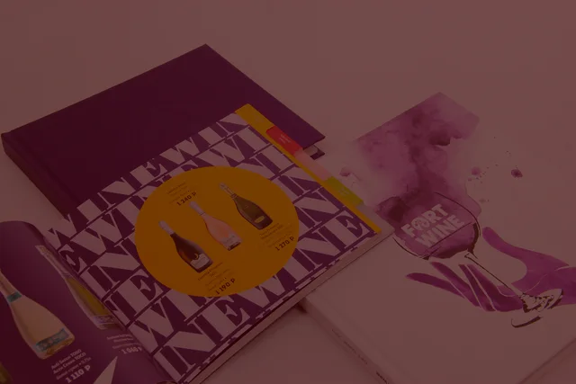
Тиснение
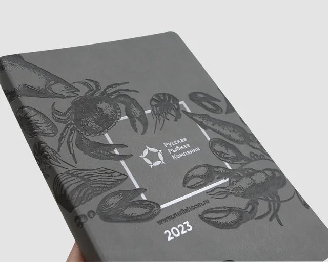
Двойное блинт серебро
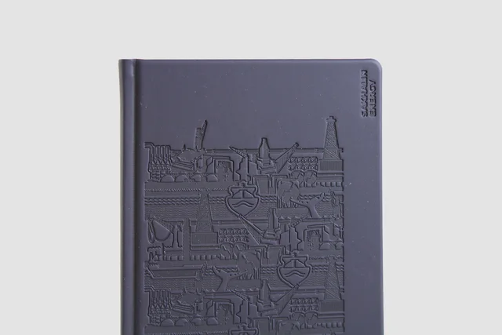
Тиснение блинт
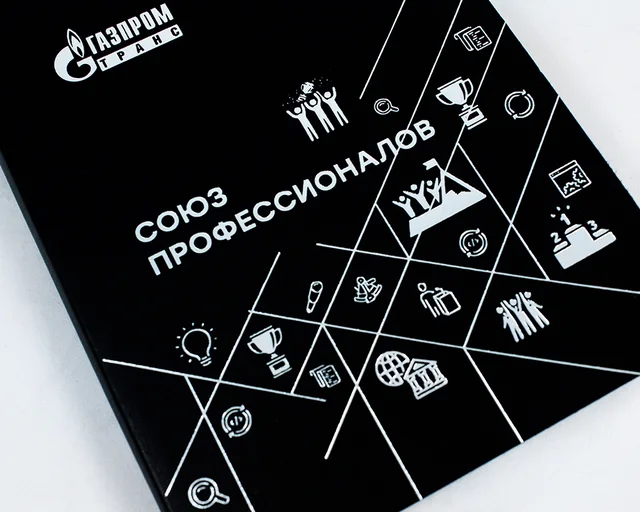
Тиснение серебряной фольгой
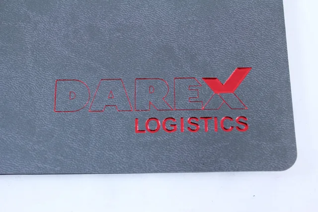
Тиснение цветной фольгой scaled
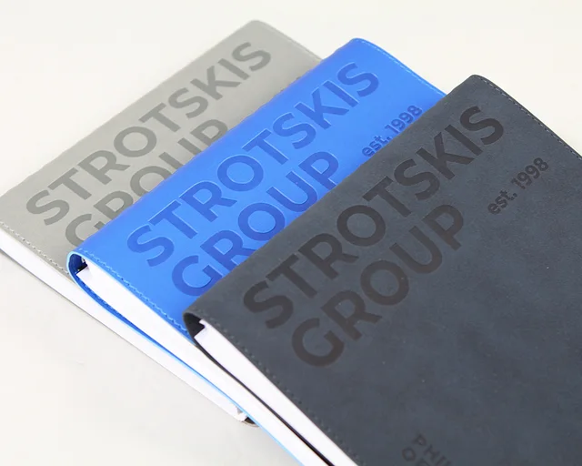
Тиснение блинт
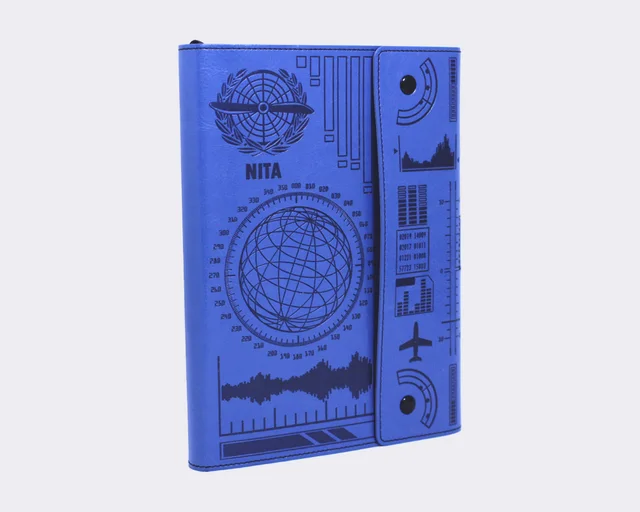
Тиснение блинт
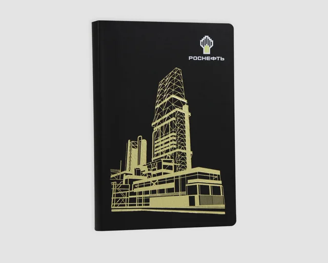
Тиснение золотой фольгой
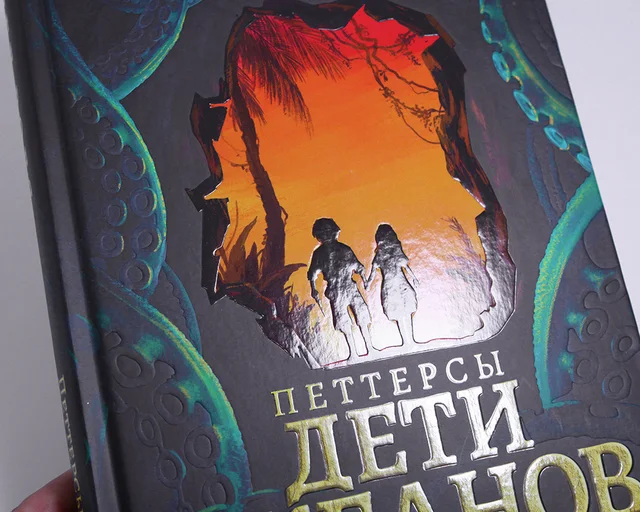
Тиснение конгрев
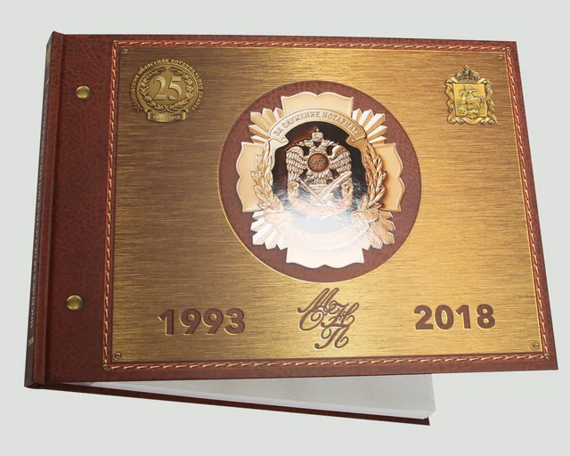
Тиснение конгрев
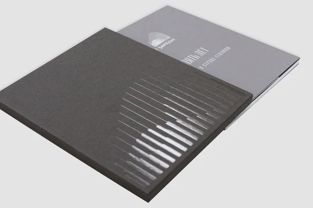
Тиснение прозрачной фольгой
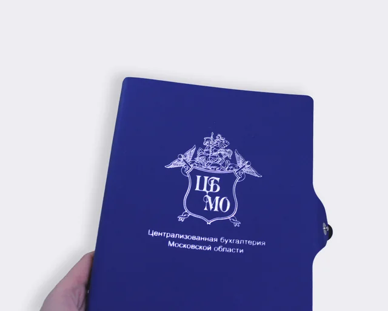
Тиснение серебряной фольгой
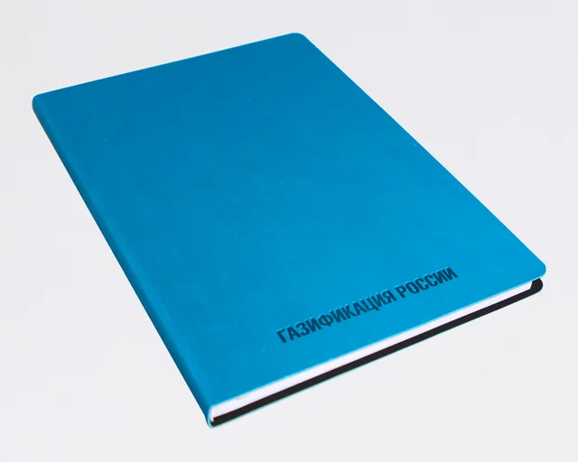
Тиснение блинт2
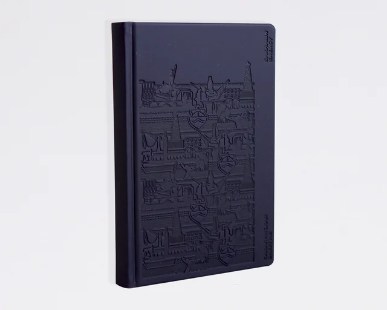
Тиснение блинт
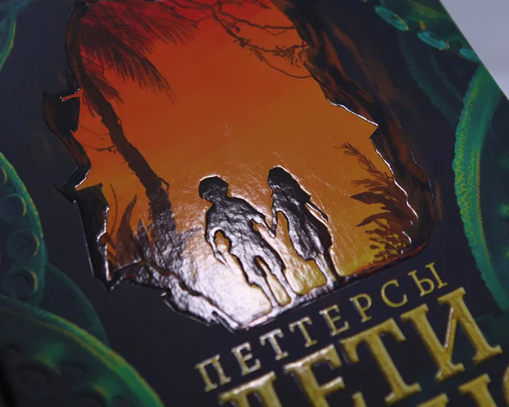
Тиснение конгрев
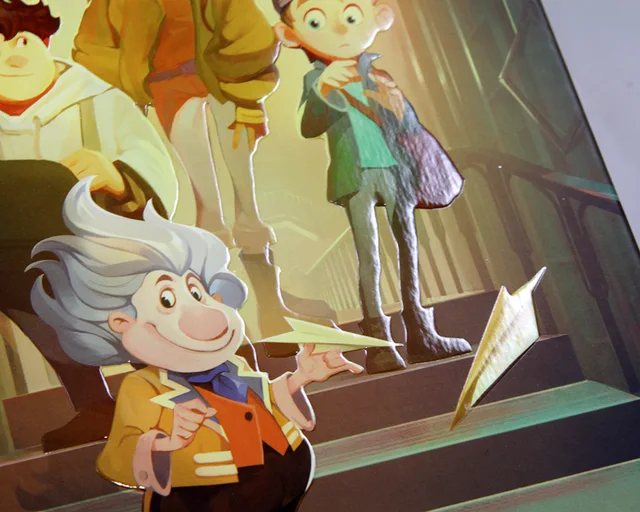
Тиснение конгрев
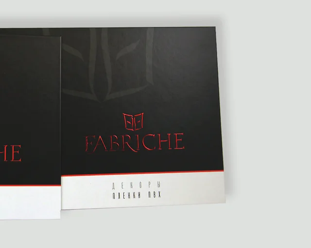
Тиснение конгрев
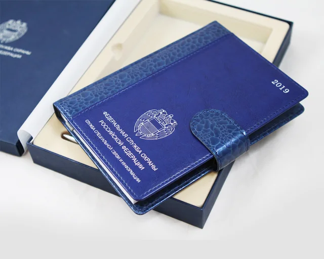
Тиснение серебряной фольгой
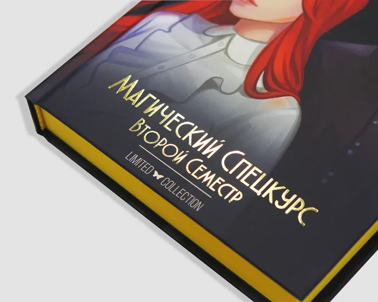
Тиснение тиснение золотой фольгой
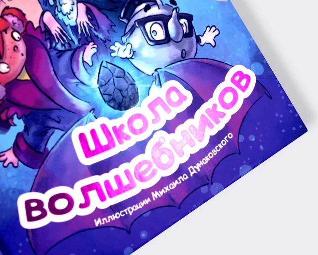
Тиснение цветной фольгой
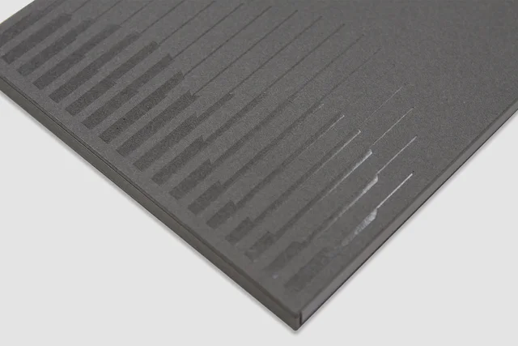
Тиснение прозрачной фольгой Тиснение прозрачной фольгой
Тиснение прозрачной фольгой 
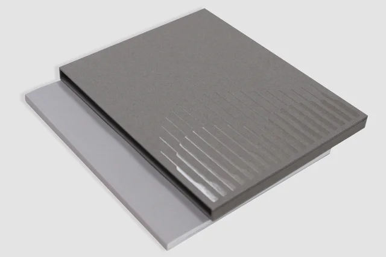
Тиснение прозрачной фольгой
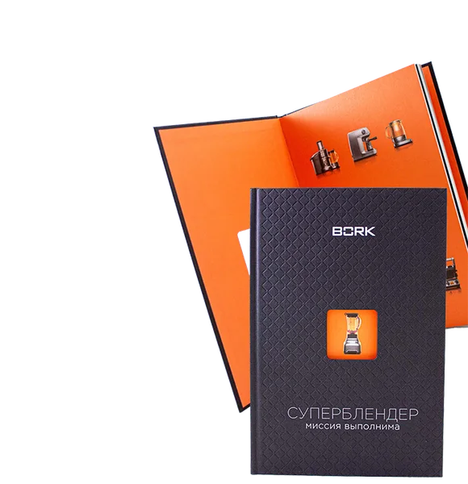
Вырубка штампом